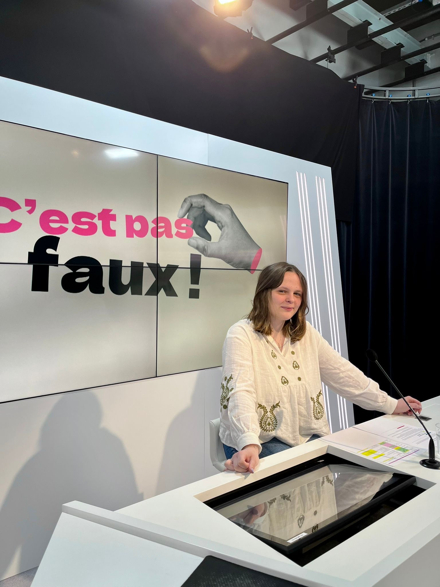
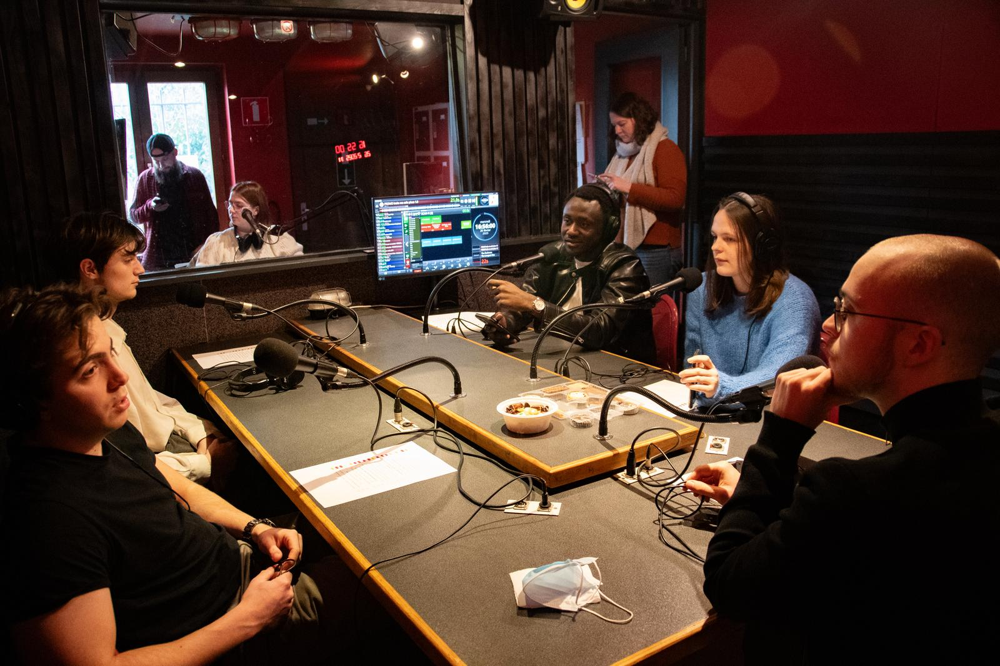
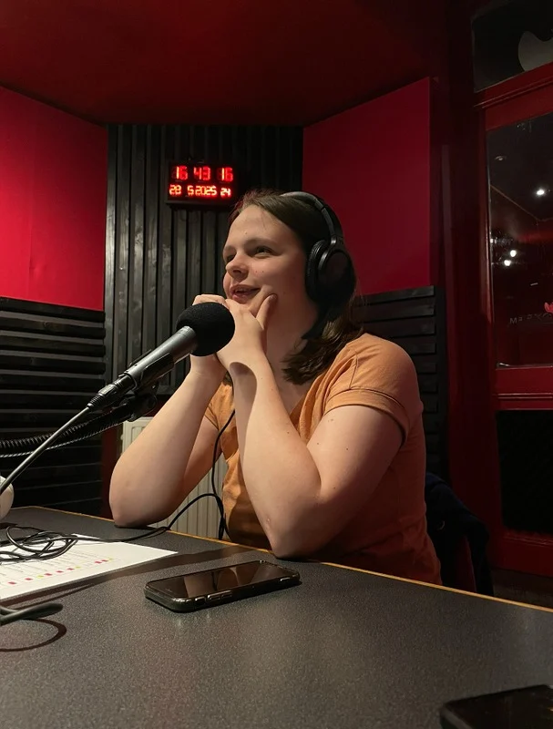

ASBL Scan-R
Au sein de l’ASBL Scan-R, je participe à des émissions TV et radio ainsi qu’à des cartes blanches. Cette expérience me permet de prendre la parole, de préparer du contenu et de travailler avec une équipe.
Écriture
Esprit d’équipe
Curiosité
Au sein de l’ASBL Scan-R, je participe à des émissions TV et radio ainsi qu’à des cartes blanches. Cette expérience me permet de prendre la parole, de préparer du contenu et de travailler avec une équipe.
J’ai animé l’émission TV « C’est pas faux ! », une expérience qui m’a permis de développer mon aisance face caméra et ma capacité à m’adapter à un plateau.
J’ai participé à l’animation de « Génération Scan-R » chez Vedia, en découvrant davantage le fonctionnement d’une émission et le travail d’équipe nécessaire à sa réalisation.
J’ai également animé « Politik-air » chez Vedia, ce qui m’a permis de continuer à développer ma prise de parole et mon intérêt pour les sujets de société.
Quelques instants de plateau, de studio, de collectif et d’écriture.

TVPlateau télévisé de l'émission, travail d'équipe et animation face caméra.

RadioAnimation collective et tables rondes avec plusieurs personnes autour des micros.

VoixCasque aux oreilles et micro ouvert pour donner une voix aux sujets qui comptent.
 Équipe
Équipe
L'émulation et la créativité partagée lors des ateliers et sessions de groupe.
 Technique
Technique
Multi-écrans, commutateurs et coordination des flux vidéo en temps réel.
 Coulisses
Coulisses
Préparation, répétitions et concentration avant le direct avec l'équipe.
Curriculum vitae
Retrouvez ici mon parcours, mes expériences et mes compétences.
Télécharger mon CV